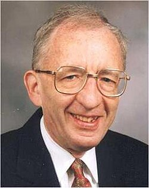

Alan Baker | |
|---|---|
 | |
| Born | 19 August 1939 London, England |
| Died | 4 February 2018 (aged 78) Cambridge, England |
| Alma mater | University College London University of Cambridge |
| Known for | Number theory Diophantine equations Baker's theorem Baker–Heegner–Stark theorem |
| Awards | Fields Medal (1970) Adams Prize (1972) |
| Scientific career | |
| Fields | Mathematics |
| Institutions | University of Cambridge |
| Thesis | Some Aspects of Diophantine Approximation (1964) |
| Harold Davenport | |
Doctoral students | John Coates Yuval Flicker Roger Heath-Brown David Masser Cameron Stewart |
{kind=link}
Alan Baker FRS[1] (19 August 1939 – 4 February 2018)[2] was an English mathematician, known for his work on effective methods in number theory, in particular those arising from transcendental number theory.
Life
Alan Baker was born into a Jewish family in London on 19 August 1939.[3] He attended Stratford Grammar School, East London, and his academic career started as a student of Harold Davenport, at University College London and later at Trinity College, Cambridge, where he received his PhD.[4] He was a visiting scholar at the Institute for Advanced Study in 1970 when he was awarded the Fields Medal at the age of 31.[5] In 1974 he was appointed Professor of Pure Mathematics at Cambridge University, a position he held until 2006 when he became an Emeritus. He was a fellow of Trinity College from 1964 until his death.[4]
His interests were in number theory, transcendence, linear forms in logarithms, effective methods, Diophantine geometry and Diophantine analysis.
In 2012 he became a fellow of the American Mathematical Society.[6] He has also been made a foreign fellow of the National Academy of Sciences, India.[7]
Research
Baker generalised the Gelfond–Schneider theorem, which itself is a solution to Hilbert's seventh problem.[8] Specifically, Baker showed that if are algebraic numbers (besides 0 or 1), and if are irrational algebraic numbers such that the set is linearly independent over the rational numbers, then the number is transcendental.
Baker made significant contributions to several areas in number theory, such as the Gauss class number problem,[9] diophantine approximation, and to Diophantine equations such as the Mordell curve.[10][11]
Selected publications
- Baker, Alan (1966), "Linear forms in the logarithms of algebraic numbers. I", Mathematika, 13 (2): 204–216, doi:10.1112/S0025579300003971, ISSN 0025-5793, MR 0220680
- Baker, Alan (1967a), "Linear forms in the logarithms of algebraic numbers. II", Mathematika, 14: 102–107, doi:10.1112/S0025579300008068, ISSN 0025-5793, MR 0220680
- Baker, Alan (1967b), "Linear forms in the logarithms of algebraic numbers. III", Mathematika, 14 (2): 220–228, doi:10.1112/S0025579300003843, ISSN 0025-5793, MR 0220680
- Baker, Alan (1990), Transcendental number theory, Cambridge Mathematical Library (2nd ed.), Cambridge University Press, ISBN 978-0-521-39791-9, MR 0422171; 1st edition. 1975.[12]
- Baker, Alan; Wüstholz, G. (2007), Logarithmic forms and Diophantine geometry, New Mathematical Monographs, vol. 9, Cambridge University Press, ISBN 978-0-521-88268-2, MR 2382891
Honours and awards
- 1970: Fields Medal
- 1972: Adams Prize
- 1973: Fellowship of the Royal Society
References
- ^ Masser, David (2023). "Alan Baker. 19 August 1939—4 February 2018". Biographical Memoirs of Fellows of the Royal Society. 74: 9–36. doi:10.1098/rsbm.2022.0033.
- ^ Trinity College website, retrieved 5 February 2018
- ^ Masser FRS, David (2023). "Alan Baker. 19 August 1939—4 February 2018". Biographical Memoirs of Fellows of the Royal Society. 74: 9–36. doi:10.1098/rsbm.2022.0033. ISSN 0080-4606.
- ^ a b "BAKER, Prof. Alan". Who's Who & Who Was Who. Vol. 2019 (online ed.). A & C Black. (Subscription or UK public library membership required.)
- ^ Institute for Advanced Study: A Community of Scholars Archived 6 January 2013 at the Wayback Machine
- ^ List of Fellows of the American Mathematical Society, retrieved 2012-11-03.
- ^ "National Academy of Sciences, India: Foreign Fellows". Archived from the original on 18 February 2017. Retrieved 2 June 2018.
- ^ Biography in Encyclopædia Britannica. http://www.britannica.com/eb/article-9084909/Alan-Baker
- ^ Goldfeld, Dorian (1985). "Gauss' class number problem for imaginary quadratic fields". Bulletin of the American Mathematical Society. 13 (1). American Mathematical Society (AMS): 23–37. doi:10.1090/s0273-0979-1985-15352-2. ISSN 0273-0979.
- ^ Masser, David (2021). "Alan Baker, FRS, 1939–2018". Bulletin of the London Mathematical Society. 53 (6). Wiley: 1916–1949. doi:10.1112/blms.12553. ISSN 0024-6093. S2CID 245627886.
- ^ Wüstholz, Gisbert (2019). "Obituary of Alan Baker FRS". Acta Arithmetica. 189 (4). Institute of Mathematics, Polish Academy of Sciences: 309–345. doi:10.4064/aa181211-14-12. ISSN 0065-1036. S2CID 197494318.
- ^ Stolarsky, Kenneth B. (1978). "Review: Transcendental number theory by Alan Baker; Lectures on transcendental numbers by Kurt Mahler; Nombres transcendants by Michel Waldschmidt" (PDF). Bull. Amer. Math. Soc. 84 (8): 1370–1378. doi:10.1090/S0002-9904-1978-14584-4.
External links
- O'Connor, John J.; Robertson, Edmund F., "Alan Baker", MacTutor History of Mathematics Archive, University of St Andrews
- Alan Baker at the Mathematics Genealogy Project
- Masser, David (January 2019). "Alan Baker 1939–2018" (PDF). Notices of the American Mathematical Society. 66 (1): 32–35. doi:10.1090/noti1753.